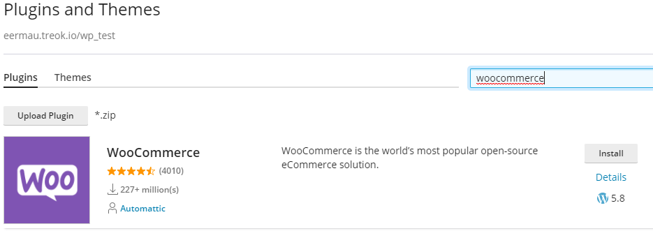
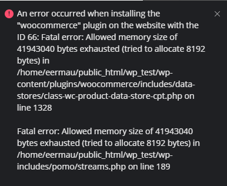
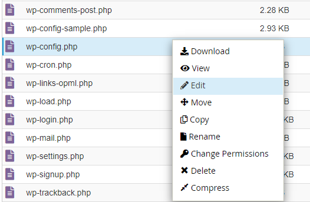
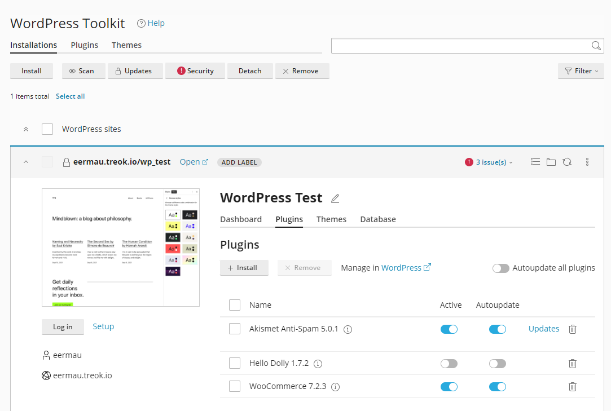

WordPress ja cPanel
Asentaminen
Kirjaudu cPaneliin tunnuksillasi ja valitse WordPress Toolkit. Asenna WordPress

- Määrittele polku
- Aseta sivustolle otsikko ja valitse käytettävä kieli
- Admin-tunnus ja salasana kannattaa laittaa talteen jotta pystyt kirjoitumaan myöhemmin muokataksesi sivustoa. Mikäli nämä tunnukset unohtuvat niiden palauttaminen onnistuu mikäli käytät oikeaa sähköpostiosoitettasi. Mikäli tunnukset unohtuvat joudut asentamaan koko sivuston uudestaan.
Plugins
Siirry kohtaan Plugins ja etsi WooCommerce. Asenna lisäosa.

Virheilmoitus

Mikäli sinulla tulee virheilmoitus muistin loppumisesta joudumme lisäämään sitä käsin wp_config.php-tiedostoon.
Avaa wp-config.php ja lisää tiedoston alkuun

define('WP_MEMORY_LIMIT', '128M');
Lisäosan aktivointi
Avaa WordPress Toolkit ja siirry Plugins-välilehdelle. Aktivoi käyttöön WooCommerce. Nyt voit kirjautua (Log in) WordPress-sivustollesi.
